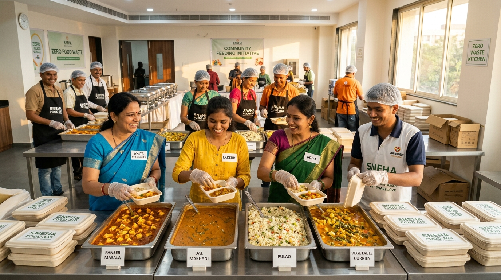

Every day, tons of edible food are lost. Annasetu instantly bridges surplus banquets and cafeterias to verified community shelters, repurposes wholesome scraps for cattle gaushalas, and converts organic residuals into rich compost.

The Royal Grand Banquet Hall
Zero edible food should ever touch a landfill. Annasetu implements an intelligent multi-tiered fallback hierarchy ensuring every gram of surplus reaches its highest ecological and social value.
Hot cooked meals, banquet catering surpluses, bakery items, and fresh produce distributed directly to orphanages, elderly homes, and daily-wage relief shelters.
Safe grains, unseasoned vegetable peels, surplus rotis, and bakery bread that exceed human shelf life are routed to registered Gaushalas and dairy cooperatives.
Raw kitchen prep scraps, tea waste, and expired perishables transformed into rich organic compost to restore micro-nutrients in agricultural soils.
Severely degraded organic waste is channeled to municipal anaerobic digesters to produce clean methane biogas for cooking and electricity generation.
Donors simply take a photo of their surplus food. Annasetu's integrated multimodal neural engine analyzes dish characteristics, moisture levels, estimated quantity, and calculates safe consumption windows.
No tedious forms. AI recognizes dishes (e.g. Biryani, Dal, Curd, Mixed Vegetables) and auto-populates nutritional profiles.
Intelligently categorizes food into Tier 1 (Human) vs Tier 2 (Cattle) or Tier 3 (Compost) based on strict perishability algorithms.
Receivers see real-time shelf life so volunteers prioritize urgent hot batches before nutritional quality drops.
Whether you are donating excess buffet meals or a shelter coordinating dinner for 150 children, Annasetu makes the connection in minutes.
Take a photo of surplus food on your mobile device. Our AI instantly classifies the cuisine, freshness, and estimates total portions.
Nearby verified NGOs, cattle shelters, or composting units receive high-priority push notifications based on distance and route suitability.
Claimants generate a secure pickup QR/OTP. Volunteers complete handover, track delivery on the live map, and log impact metrics.
Everything you need to know about safety, liability, logistics, and partner registration.